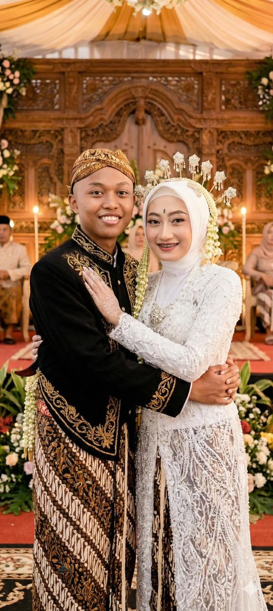

Bismillahirrahmanirrahim
Maha Suci Allah yang telah menciptakan makhluk-Nya berpasang-pasangan.

King Radit
Putra dari Bpk. Raja & Ibu Ratu
&Zahara Kamila
Tungga Dewi
Tungga Dewi
Putri dari Bpk. Bangsawan & Ibu Dewi
AKAD NIKAH
Sabtu, 25 November 2025
08.00 WIB - Selesai
RESEPSI
Minggu, 26 November 2025
11.00 - 14.00 WIB
LOKASI
Aula SMAN 1 Gresik
Jl. Arif Rahman Hakim No. 1, Gresik
Merupakan suatu kehormatan dan kebahagiaan bagi kami apabila Bapak/Ibu/Saudara/i berkenan hadir untuk memberikan doa restu.
Wassalamualaikum Wr. Wb.